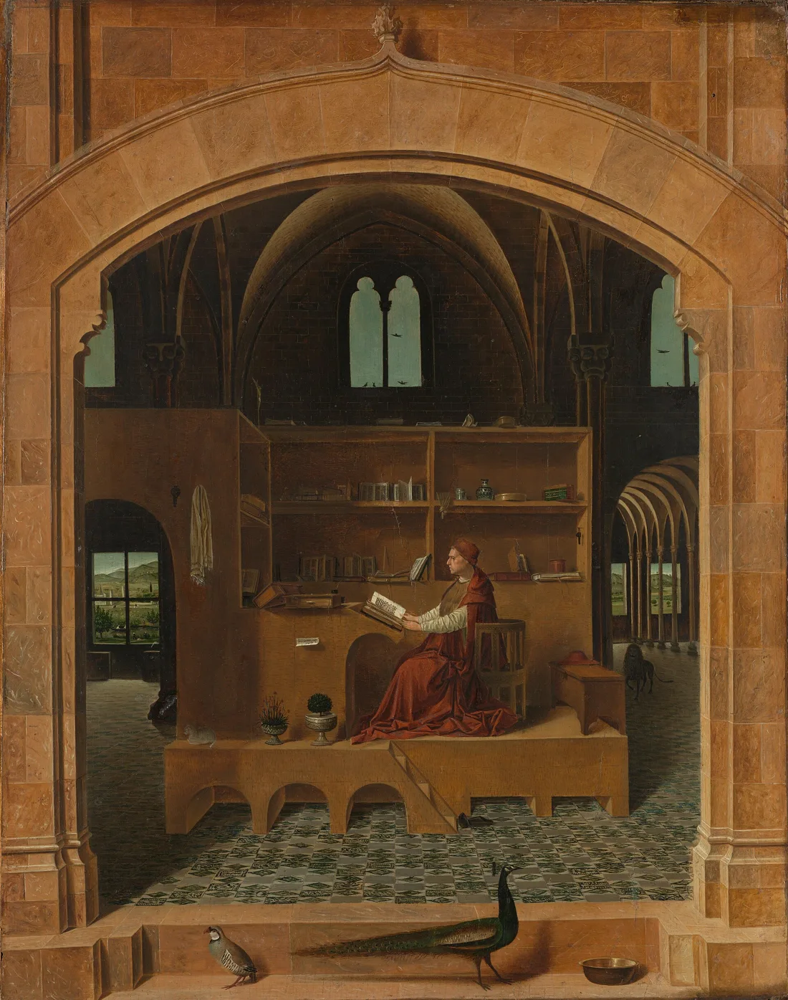

Struggling to memorize Scripture or don’t know how to start?
This tool walks you through an exercise in associating each segment of a verse with an object in a classical painting and crafting a memory or elaborate story for each in a sequence. Then you practice by repeating the story as you journey mentally through the room of objects.
Preview of Rooms
New to memory rooms? Start with The Power to Memorize Scripture.
For passages longer than about three verses, use two or more rooms, and find a meaningful connection that carries you from one to the next.
Next, break the verse into short phrases. We've suggested the breaks — tap any word to add or remove one.
Next, choose a room. Browse the paintings, get to know their objects, and pick one that suits your verse — or simply one you enjoy.
Now give each phrase a home. Click an object on the painting for the highlighted phrase, in any order you like.
Then connect each phrase to its object with a line of story. The stranger and more personal, the better it sticks.
Finally, practice in three stages: walk the room with your story, strengthen it with the drills, then recite the whole verse from memory.
First, look up a verse you'd like to memorize or select one below.
Your Own Verse
My Verses
Sign in to save your verses and rooms, and to see when each one is due for review.
Or choose a verse

Route tuning (ticket 72 · ?tune=1 only)
Choose a room
Objects in this room
Point at any name to find it in the painting.
Objects in this room
Your connections
Keep a Copy
Save your room — the painting with your path, plus each phrase, object and connection — to study offline.